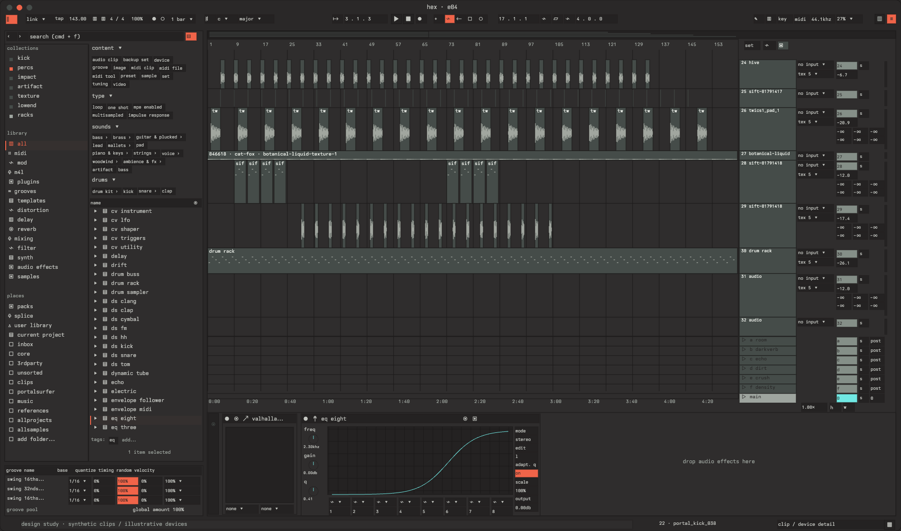
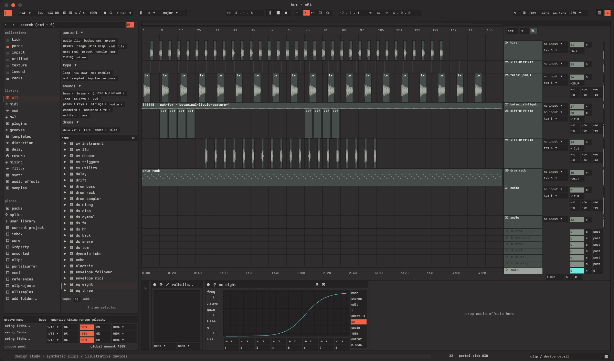
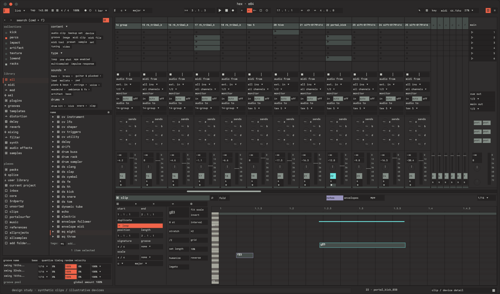
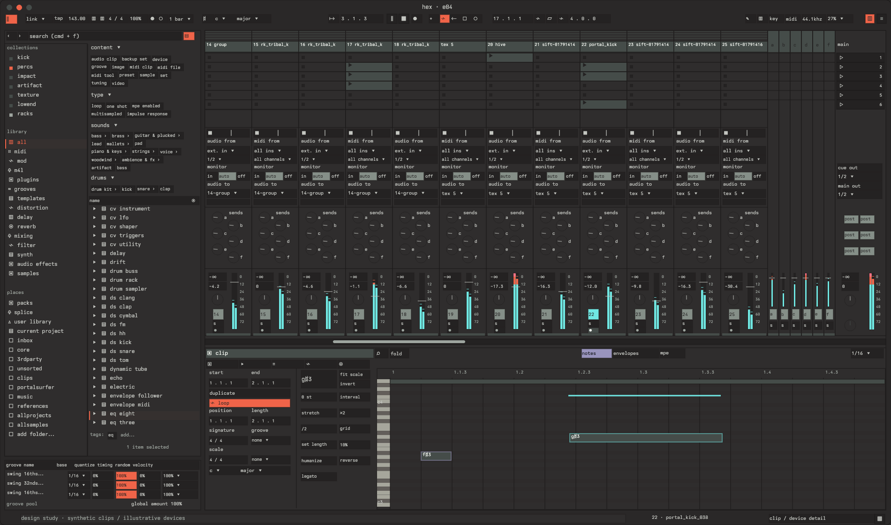
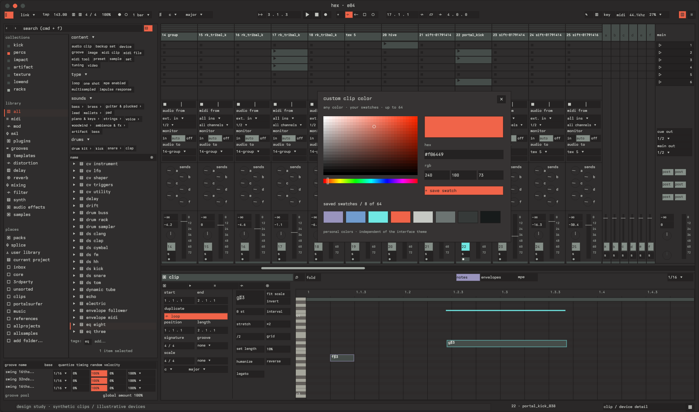
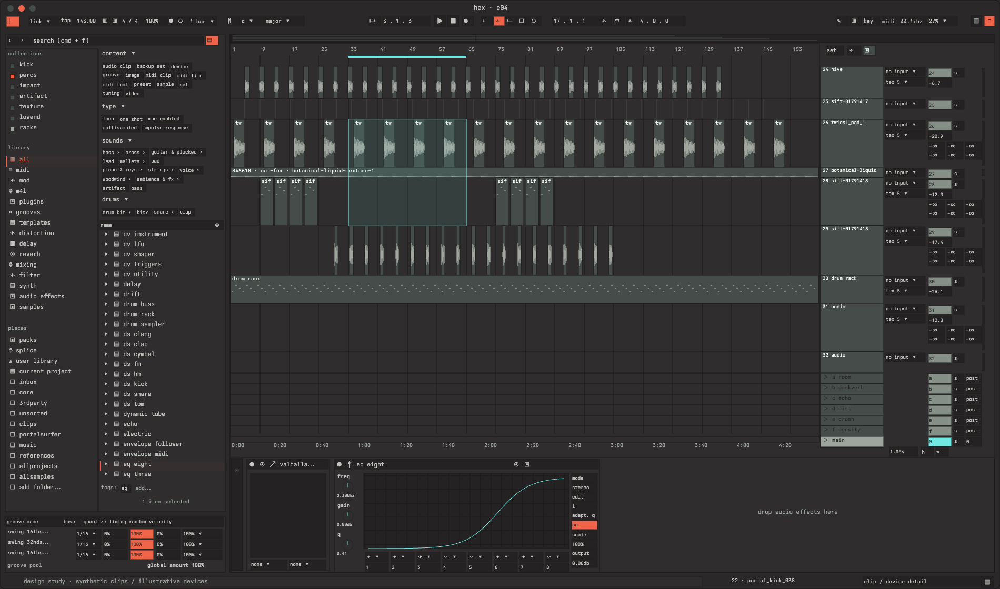

<!doctype html><html lang="en"><meta charset="utf-8"><meta name="viewport" content="width=device-width,initial-scale=1"><title>hex · iteration 3 state views</title><style>@font-face{font-family:ioskeley;src:url(/assets/fonts/ioskeley-mono/ioskeley-mono-regular.ttf)}*{box-sizing:border-box}body{margin:0;background:#2a2828;color:#c3c5c0;font:12px ioskeley,monospace}header{display:flex;align-items:center;justify-content:space-between;padding:16px 20px;border-bottom:1px solid #191717}h1{font-size:14px;font-weight:400;margin:0}a{color:#00e8df;text-decoration:none}main{display:grid;grid-template-columns:repeat(2,minmax(0,1fr));gap:16px;padding:20px}figure{margin:0}figcaption{padding:8px 0;color:#9ea59f}img{display:block;width:100%;height:auto;border:1px solid #191717}figure a:hover img{border-color:#f06449}@media(max-width:850px){main{grid-template-columns:1fr}}</style><header><h1>hex · ui iteration 3 / state views</h1><a href="/">open editable frame project ↗</a></header><main><figure><a href="default.png"></a><figcaption>arrangement · stopped</figcaption></figure><figure><a href="playing.png"></a><figcaption>arrangement · playing</figcaption></figure><figure><a href="session.png"></a><figcaption>session · stopped</figcaption></figure><figure><a href="session-playing.png"></a><figcaption>session · playing</figcaption></figure><figure><a href="clip-colors.png"></a><figcaption>session · custom clip color</figcaption></figure><figure><a href="time-selection.png"></a><figcaption>arrangement · time selection</figcaption></figure></main></html>